Famiglie
Tuo figlio o tua figlia suona uno strumento, e tu vuoi che lo faccia bene e a lungo. HAPPY raccoglie in un Toolkit strumenti semplici e concreti pensati anche per le famiglie, come materiali illustrati, consigli per lo studio a casa e spunti per parlarne con insegnanti e professionisti della salute. Senza bisogno di competenze mediche, e con risposte che nascono anche da ciò che racconti tu.

Come partecipare
Parti dal sondaggio, pochi minuti per dirci cosa osservi e cosa vorresti sapere.
Poi, se vuoi, puoi fare di più. Partecipa agli incontri pensati per le famiglie e raccontaci la tua esperienza negli HAPPY Diaries, uno spazio digitale in cui annoti quando vuoi osservazioni e riflessioni.
Aderendo ricevi consigli ogni mese via newsletter, accesso prioritario ai workshop e accesso gratuito al Toolkit, alle risorse e ai concerti del CSI.